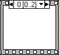

A sequence structure contains one or more subdiagrams, or frames, that execute in sequential order. Within each frame of a sequence structure, as in the rest of the block diagram, data dependency determines the execution order of nodes.
There are two types of sequence structures�the Flat Sequence structure and the Stacked Sequence structure. Use sequence structures sparingly because they hide code. Rely on data flow rather than sequence structures to control the order of execution. With sequence structures, you break the left-to-right data flow paradigm whenever you use a sequence local variable.
|
Tip�� To help control data flow, you can use error clusters instead. If flow-through parameters are not available and you must use a sequence structure in a VI, consider using a Flat Sequence structure. |
The output tunnels of a sequence structure can have only one data source, unlike Case structures. The output can emit from any frame. As with Case structures, data at input tunnels is available to all frames in either the Flat Sequence or the Stacked Sequence structure.
The Flat Sequence structure, shown as follows, executes frames from left to right and when all data values wired to a frame are available. The data leaves each frame as the frame finishes executing. This means the input of one frame can depend on the output of another frame.
When you add or delete frames in a Flat Sequence structure, the structure resizes automatically.
If you change a Flat Sequence to a Stacked Sequence and then back to a Flat Sequence, LabVIEW moves all input terminals to the first frame of the sequence. The final Flat Sequence operates the same as the Stacked Sequence. After you change the Stacked Sequence to a Flat Sequence with all input terminals on the first frame, you can move wires to where they were located in the original Flat Sequence.
The Stacked Sequence structure, shown as follows, stacks each frame so you see only one frame at a time and executes frame 0, then frame 1, and so on until the last frame executes.

The Stacked Sequence structure returns data only after the last frame executes. Use the Stacked Sequence structure if you want to conserve space on the block diagram.
Unlike when you pass data between frames in the Flat Sequence structure, you need to use sequence locals to pass data from frame to frame in the Stacked Sequence structure.
The sequence selector identifier, shown as follows, at the top of the Stacked Sequence structure contains the current frame number and range of frames.
Use the sequence selector identifier to navigate through the available frames and rearrange frames. The frame label in a Stacked Sequence structure is similar to the case selector label of the Case structure. The frame label contains the frame number in the center and decrement and increment arrows on each side.
You cannot enter values in the frame label. When you add, delete, or rearrange frames in a Stacked Sequence structure, LabVIEW automatically adjusts the numbers in the frame labels.